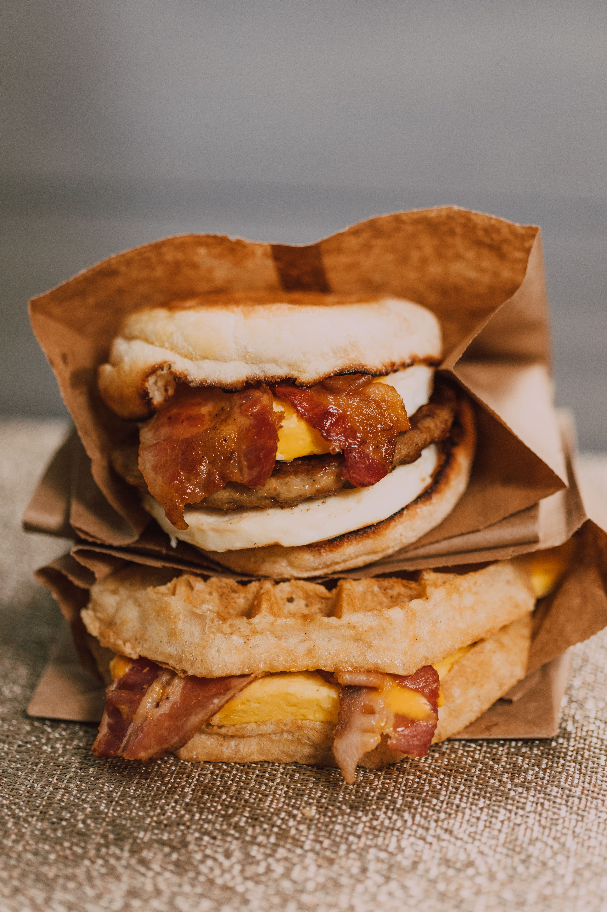

Home
Suasage Egg and Cheese

Mmmmm what's that smell? Its savory and strong, bold even but in a welcoming way. It is hugging my nose and stomach. I can smell the eggs and suasage. Who is making such a magnificant meal?
Ingredients
- Beef Suasage
- 3 Eggs
- Cheddar Cheese
- Italian roll
- Mayo
- Ketchup
- Salt
- Black Pepper
Steps
- Crack 3 Eggs into a bowl and wisk until mixed
- Add a pinch of salt and pepper to your egg
- Fry your beef suasage patties for 10 minute
- Cut your Italian Roll in half to stage your sandwich
- Butter you pan after you suasage is finished and pour egg yolk into pan
- Fry eggs for about 3 minutes
- (optional)Spread Mayo and ketchup on roll
- assemble sandwich